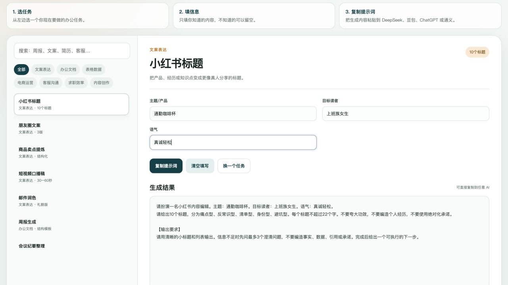

AI
AI 办公提效工具箱新手图文教程 · 2026 版
BEGINNER GUIDE
看这一份，
就知道怎么用。
这不是 AI 课程，也不自动替你操作 AI。它的作用是：把你不知道怎么写的需求，变成一段结构清楚的提示词。你把提示词复制到 DeepSeek、豆包、ChatGPT 或通义，就能得到更接近你要的结果。
先记住三步
STEP 01选任务左边从“文案、办公、表格、电商、客服、求职、内容”里选一个。
STEP 02填信息中间只填你知道的。例如产品、对象、语气、输入数据。
STEP 03复制给 AI点击复制，把右边内容粘贴到你常用的 AI 对话框。

工具箱界面：左侧选任务，中间填写，右侧生成可复制的提示词。
三个真实例子
例子 1：写小红书标题
你这样填主题：通勤咖啡杯
目标读者：上班族女生
语气：真诚、轻松、不要广告腔
目标读者：上班族女生
语气：真诚、轻松、不要广告腔
工具会生成10 个标题，分为痛点型、反常识型、清单型、身份型、避坑型。
请扮演一名小红书内容编辑。主题：通勤咖啡杯。目标读者：上班族女生。语气：真诚、轻松、不要广告腔。
请给出10个标题，分类型输出。不要夸大功效，不要编造个人经历，不要使用绝对化承诺。
例子 2：整理周报
你这样填本周事项：回访老客户、整理报价单、跟进两个订单
结果：完成 8 家回访，新增 2 个意向客户
下周计划：继续跟进、整理库存
结果：完成 8 家回访，新增 2 个意向客户
下周计划：继续跟进、整理库存
工具会生成一份包含“本周完成、关键结果、问题风险、下周计划、需要支持”的周报框架。
记住：数字必须是你真实提供的。AI 不应该替你编造结果。
例子 3：问 Excel 公式
你这样填软件：WPS
结构：A列SKU、B列入库、C列出库
目标：按SKU计算当前库存
结构：A列SKU、B列入库、C列出库
目标：按SKU计算当前库存
工具会生成一段要求 AI 先确认列名、再给公式、解释公式并给验证示例的提示词。
请帮我写一个Excel公式。软件：WPS。表格结构：A列SKU、B列入库、C列出库。目标：按SKU计算当前库存。请先确认列名和范围，再给公式并解释；不要假设不存在的列。
复制之后怎么做
1. 粘贴到 AI：打开 DeepSeek、豆包、ChatGPT 或通义，把提示词粘贴到对话框发送。
2. 看结果：如果太泛，不要只说“再改改”，直接补充真实信息，例如“客户是餐饮店，客单价20元，想清库存”。
3. 自己核对：AI 的数字、引用、合同条款、客户承诺、专业结论都要人工确认。
这个工具不会自动调用 AI，不需要 API Key，也不需要登录。它只负责把“你怎么问”准备好。
最常见的四个问题
1. 为什么结果很空泛？
通常是输入信息太少。补充对象、场景、真实数据、期望格式和例子，重新生成。
2. 为什么没有一键出结果？
因为本工具不绑定第三方 AI 账号，也不需要 API。它生成提示词，你复制到自己的 AI 工具里。
3. 可以粘贴公司资料吗？
先去掉姓名、电话、身份证、银行卡、客户隐私和商业机密。不要把不该外发的信息粘贴到第三方 AI。
4. AI 写错了怎么办？
让它列出信息来源或不确定的地方；重要内容自己查证。AI 不能替代财务、法律、医疗、质量和安全专业判断。
7 天上手计划
- 第 1 天：用“周报生成”整理一次真实工作。
- 第 2 天：用“小红书标题”生成 10 个版本，再人工挑。
- 第 3 天：用“Excel 公式求助”解决一个实际表格问题。
- 第 4 天：用“客户询价回复”写一条客服话术。
- 第 5 天：用“会议纪要整理”整理一次会议记录。
- 第 6 天：用“简历优化”或“自我介绍”只保留真实经历。
- 第 7 天：留下 3 个最省时间的任务，固定使用。
使用前检查
- 已解压整个文件夹，不只是单独拖动 HTML
- 用 Chrome、Edge 或 Safari 打开
- 选中的是符合当前工作的任务
- 输入里没有敏感隐私
- 复制的是右侧“生成结果”
- AI 生成后已经人工核对
不要把 AI 输出来的内容直接当作事实、合同、财务报表、医疗建议或客户承诺。